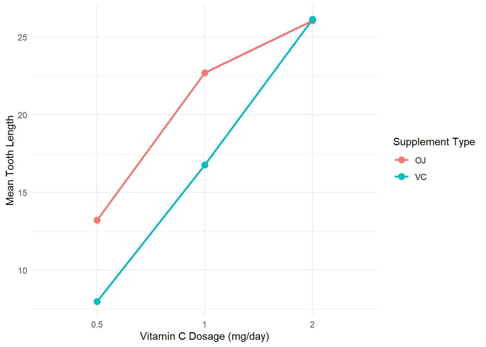
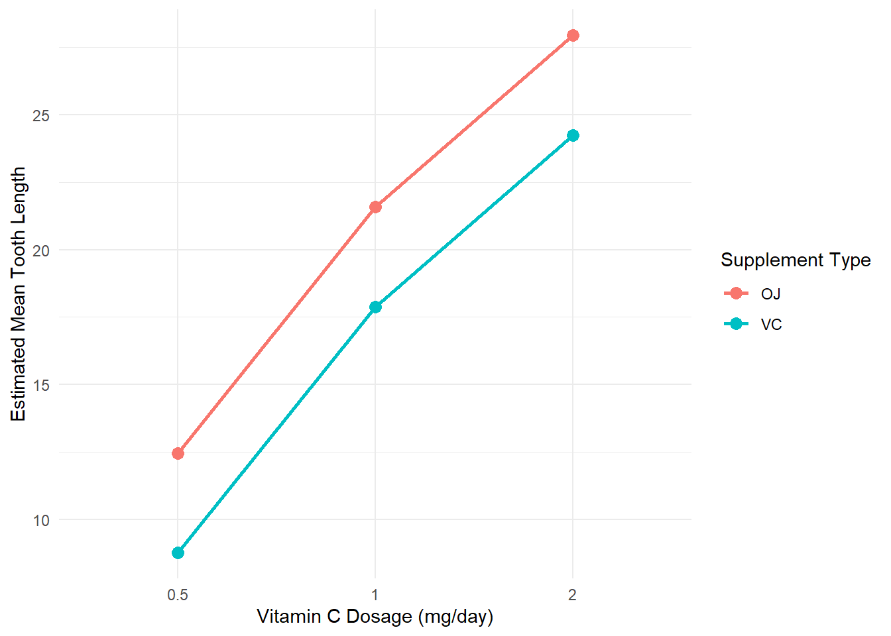
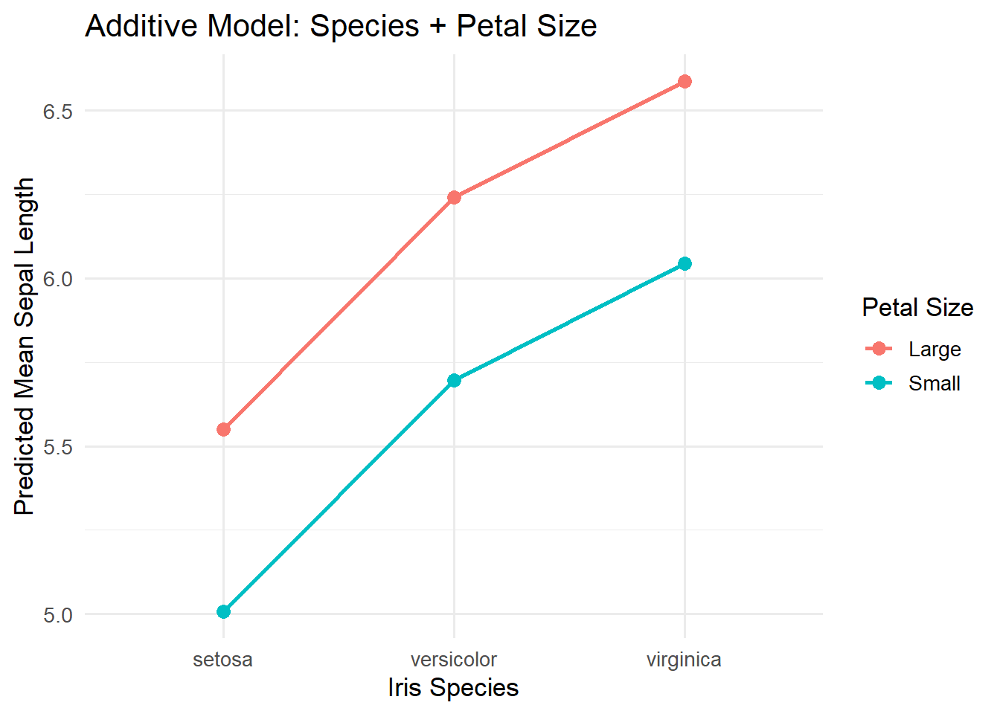

# A tibble: 6 × 3
# Groups: supp [2]
supp dose mean_len
<fct> <fct> <dbl>
1 OJ 0.5 13.2
2 OJ 1 22.7
3 OJ 2 26.1
4 VC 0.5 7.98
5 VC 1 16.8
6 VC 2 26.1 Homework-3
Note
This assignment is due November 20th at 11:59pm on Gradescope The late window goes until November 21st at 11:59pm on Gradescope
Instructions on how to start
This is a hand written assignment. Please label your questions as clearly as possible and put your name at the top of your assignment. You may work together on homework, but you are required to turn in your individual work. Unless otherwise specified, please give your answers to 2 decimal places.
Show your work. I am happy to assign partial credit that you earn, but this can not be done if you do not show your work.
Instructions on how to turn your homework in
You will turn in your assignment on Gradescope. A Gradescope link to Homework-1 can be found on Moodle. Here is a short video by Gradescope on how to turn in your assignment: Video. Please submit a PDF. All other file types will not be graded. As the video says, there are several phone apps you can use to create a PDF of your work. You can also you a scanner. If you are having trouble creating a PDF of your work, please reach out to me and we will have a conversation.
Context
The ToothGrowth dataset contains data from an experiment investigating the effect of vitamin C on tooth growth in guinea pigs. The study examined two different supplement types, orange juice (OJ) and ascorbic acid (VC), at three different dosage levels (0.5, 1, and 2 mg per day). The response variable, len, measures tooth length for each guinea pig. There are 60 observations in total, with 10 guinea pigs in each combination of supplement type and dosage level. The goal is to investigate whether tooth growth differs based on supplement type and dosage, and whether the effect of dosage on tooth growth depends on the type of supplement administered.
The estimated means can be seen below.
Question-1 (15-points)
- This interaction plot displays the mean tooth length for each supplement type at each dosage level. Draw this interaction plot. Based on the interaction plot, do you think there is evidence of an interaction between supplement type and dosage? Explain your reasoning using the patterns observed in the plot.
Next, use the sample means from the context above, and label each circle with their appropriate value.

- We are going to test for an interaction between dosage, supplement type, and mean tooth growth. In words, write out the null and alternative hypothesis. Hint: see the slides for an example.
\(Ho:\)
\(Ha:\)
Question-2 (15-points)
- What does the
Interceptestimate represent in the context of the problem? That is, what does the value of 13.230 represent in the context of our problem?
# A tibble: 6 × 3
term estimate std.error
<chr> <dbl> <dbl>
1 (Intercept) 13.2 1.15
2 suppVC -5.25 1.62
3 dose1 9.47 1.62
4 dose2 12.8 1.62
5 suppVC:dose1 -0.680 2.30
6 suppVC:dose2 5.33 2.30Write out the estimated model, including the appropriate indicator functions for supplement type and dosage.
Using your estimated model from part b, show how 16.8 is calculated for an observation that had a vitamin C dosage, and a dose amount of 1, by plugging in the appropriate 1s and 0s. Show your work.
Question-3 (10-points)
The additive model assumes that the effect of supplement type is the same at every dosage level. The estimated output, and the plot, can be seen below.
# A tibble: 4 × 3
term estimate std.error
<chr> <dbl> <dbl>
1 (Intercept) 12.5 0.988
2 suppVC -3.7 0.988
3 dose1 9.13 1.21
4 dose2 15.5 1.21 
Write out the estimated model for the model that only has an additive effect between dosage, supplement type, and mean tooth length, including the appropriate indicator functions for supplement type and dosage.
Using your estimated model from part a, calculate the estimated mean tooth length for an observation that had a vitamin C dosage, and a dose amount of 1. Show your work.
Question-4 (10-points)
I now want you to calculate the Sums of Squares for the interaction term by hand using the estimated means from the interaction model and the estimated means for the additive model. You can check if you calculated this correctly by comparing it to the following output below
\[ SS_{\text{Interaction}} = n\sum_{j=1}^{a}\sum_{k=1}^{b} \left( \widehat{\mu}_{jk,\text{interaction}} - \widehat{\mu}_{jk,\text{additive}} \right)^2 \]
Hint: Repeat steps from Question-3 and Question-4 for every other combination of dosage and supplement type to answer this question.
Note: Lowercase n represents the sample size for each group, and is outside the summations because each group has the same sample size of 10. That is, after you calculate the estimated means, subtract them, square them, and sum them all up, you need to multiply by 10.
Anova output
Df Sum Sq Mean Sq F value Pr(>F)
supp 1 205.4 205.4 15.572 0.000231 ***
dose 2 2426.4 1213.2 92.000 < 2e-16 ***
supp:dose 2 108.3 54.2 4.107 0.021860 *
Residuals 54 712.1 13.2
---
Signif. codes: 0 '***' 0.001 '**' 0.01 '*' 0.05 '.' 0.1 ' ' 1Question-5 (10-points)
Using the Anova output from above report the following information:
– Our statistic
– The distribution our statistic follows
– A conclusion in terms of the alternative hypothesis, in the context of the problem.
Question-6 (30-points)
For this question, we are going to use the iris data set. This famous (Fisher’s or Anderson’s) iris data set gives the measurements in centimeters of the variables sepal length and width and petal length and width, respectively, for 50 flowers from each of 3 species of iris. The species are Iris setosa, versicolor, and virginica.
Let’s investigate whether species has an additive effect on sepal length.
In 1-2 sentences, explain why including
petal widthmay also be important when looking at the relationship betweenpetal lengthandspecies.Regardless of your answer in
a, we are going to includepetal width. Please see the output below:
# A tibble: 4 × 3
# Groups: Petal_Width [2]
Petal_Width Species mean_length
<fct> <fct> <dbl>
1 Small setosa 1.46
2 Small versicolor 3.99
3 Large versicolor 4.61
4 Large virginica 5.55In 1-2 sentences, explain why this is a Two-way ANOVA problem.
- In words, write out the appropriate null and alternative hypothesis.
\(Ho:\)
\(Ha:\)
- Below is a plot of the additive model:

In 1-2 sentences, explain if you think Species has an effect on mean Sepal Length.
- Below is the output to answer your research question.
Anova output
Analysis of Variance Table
Response: Sepal.Length
Df Sum Sq Mean Sq F value Pr(>F)
Species 2 63.212 31.6061 130.708 < 2.2e-16 ***
petal_size 1 3.652 3.6524 15.104 0.0001539 ***
Residuals 146 35.304 0.2418
---
Signif. codes: 0 '***' 0.001 '**' 0.01 '*' 0.05 '.' 0.1 ' ' 1Using the Anova output from above report the following information:
– Our statistic
– The distribution our statistic follows
– A conclusion in terms of the alternative hypothesis, in the context of the problem.